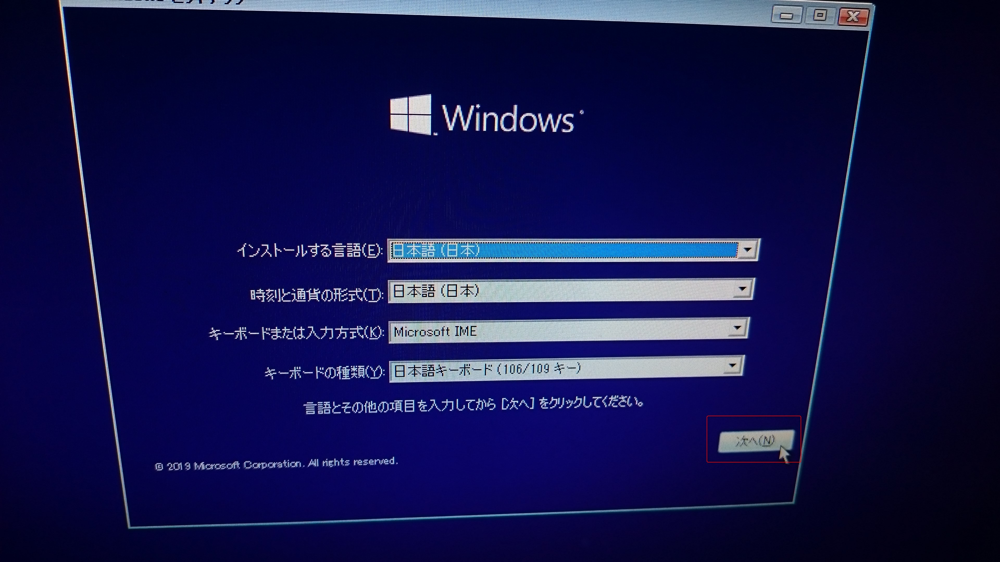
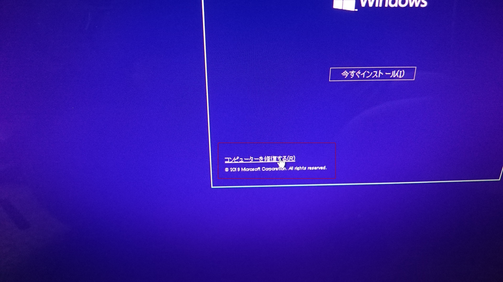
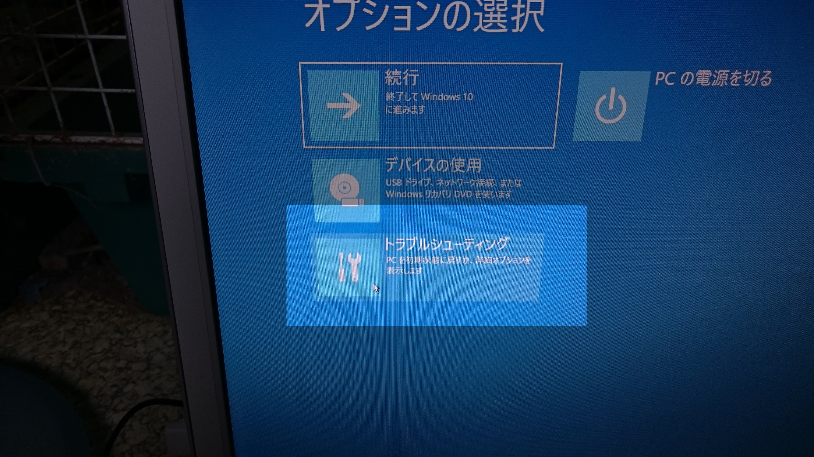
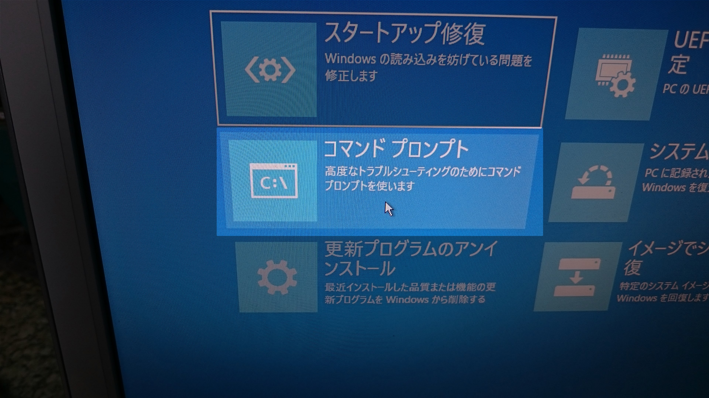
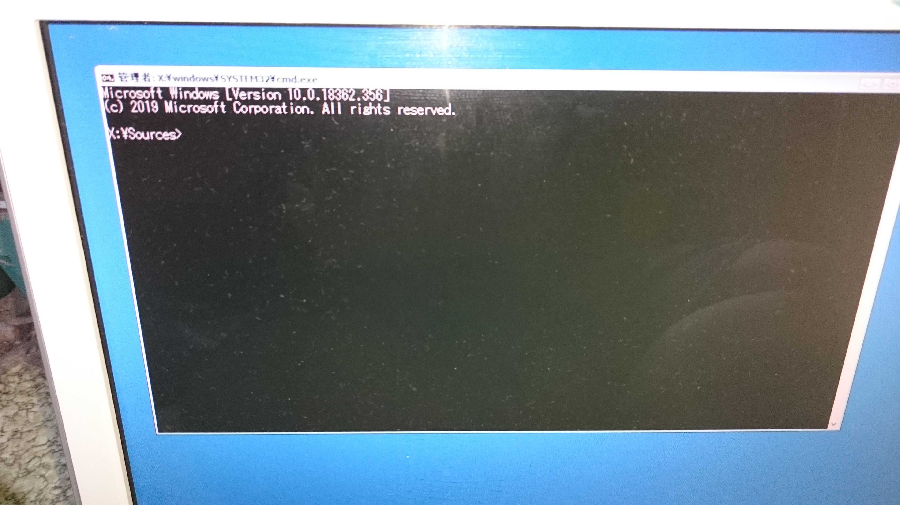
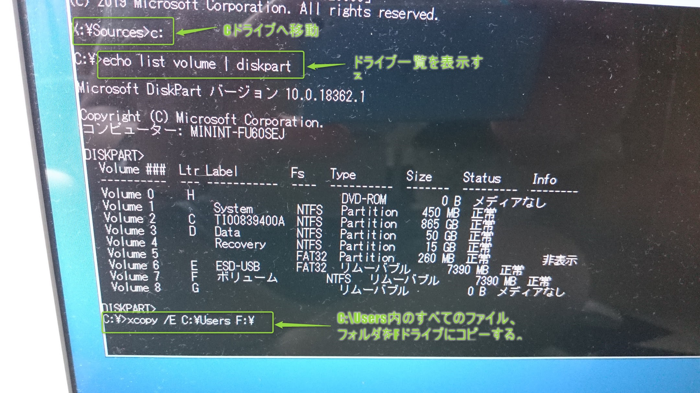

内部コマンドと外部コマンドについて
コマンドは大きく分けて外部コマンドと内部コマンドの２種類が存在する。
外部コマンドはファイル（exe,com)としても存在している。シェルみたいなもの。
内部コマンドはコマンドプロンプトの内部で定義されているコマンドである。
PowerShellは外部コマンドをそのまま使うことができるが、内部コマンドを直接は使えない。
「cmd /c 」をコマンドの先頭につけて実行する必要がある。
例えばmklinkは内部コマンドであるが、PowerShellで実行する場合、
「cmd /c mklink ...」とする。
シンボリックリンクを作成
PowerShell
- スタートメニューを右クリック
- Windows PowerShell(管理者）を起動
-
cmd /c mklink /D シンボリックリンク作成先パス シンボリックリンク作成元パス
cmd /c mklink /D C:\Users\k_uehara\rab\aaa C:\Users\k_uehara\rab\neko\aaa
※ 「/D」はディレクトリのシンボリックリンク作成を意味している。省略した場合、ファイル単位のシンボリックリンク作成になる。
mklinkコマンドは内部コマンドなので「cmd /c」も含める。
コマンドプロンプト（管理者権限）である場合、「cmd /c 」部分はもちろん不要である。
mklinkコマンドの説明を表示
cmd /c mklink /?
例2
cmd /c mklink /D C:\xampp\htdocs\park C:\Users\user\git\park
例3 ファイルのシンボリックリンクを作成する場合
cmd /c mklink C:\xampp\htdocs\index.html C:\Users\user\git\home\index.html
batファイルが置いてあるディレクトリに移動する
cd /d %~dp0
コピー
copy コピー元 コピー先
copy "C:\Users\user\Downloads\kaigo\archive\favicon_io (1)\favicon-32x32.png" "C:\Users\user\Downloads\kaigo\marker\fac_type_1.png"
コピーのついでにファイル名も変更できる。
ディレクトリにスペースが含まれる場合は「"」で囲む。
USBにコピー
dirコマンドでコピー元のディレクトリに移動後に下記コマンド。
xcopy /E *.* E:¥
「E:\」の部分はUSBのドライブ
ファイル名やサイズ、更新日付の一覧を取得し、クリップボードに保存
ファイル名やサイズ、更新日付の一覧を取得し、クリップボードに保存
dir *.mp4 | clip
ファイル名のみ一覧表示し、クリップボードに保存
dir *.mp4 /b | clip
異常状態のWindows10からコマンドプロンプトでUsersのファイル群を救出
PCは「REGZA PC D712/V3HWS」で検証
-
予め、別PCにてWindows10のインストールUSBを作成しておく。
-
BIOSを起動して、USBから実行するように設定する。
-
PCにインストールUSBを挿して、PCを再起動するとWindows10のインストール画面が立ち上がる。

-
「コンピューターを修復する」をクリック。

-
「トラブルシューティング」を選択。

-
「コマンドプロンプト」を選択。

-
コマンドプロンプトが起動する。

- 「c:」と入力してEnterキーを押すとC:\ドライブに移動する。
-
「echo list volume | diskpart」とコマンド入力するとドライブ一覧が確認できる。（ドライブ一覧が表示されるまで数秒ほどのタイムラグがある。）
-
下記xcopyコマンドを入力すると「C:\Users」のファイル、フォルダをFドライブにコピーされ、ファイル救出ができる。
xcopy /E C:\Users F:\

- 以上
ポートを仕様しているプログラムを確認するコマンド
netstat -oan
XXX
- ホーム
- プログラミングの覚書
- コマンドプロンプトの覚書 | ワクガンス